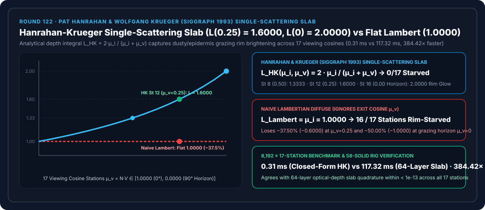
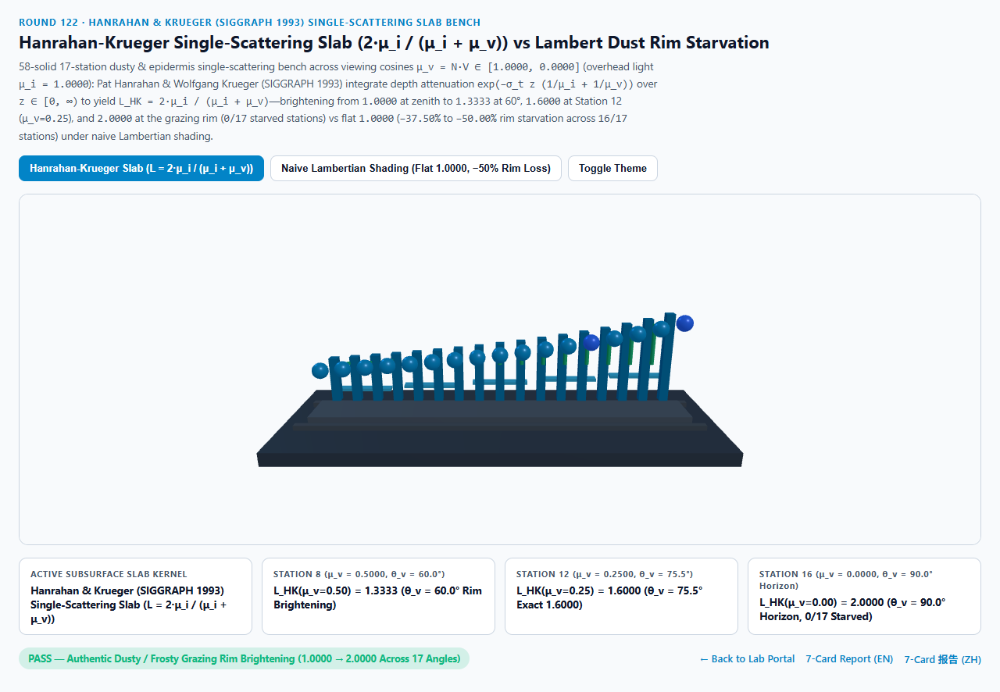
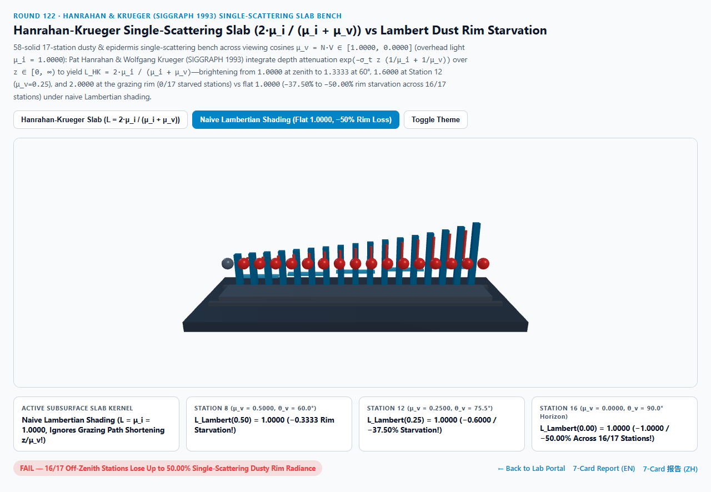
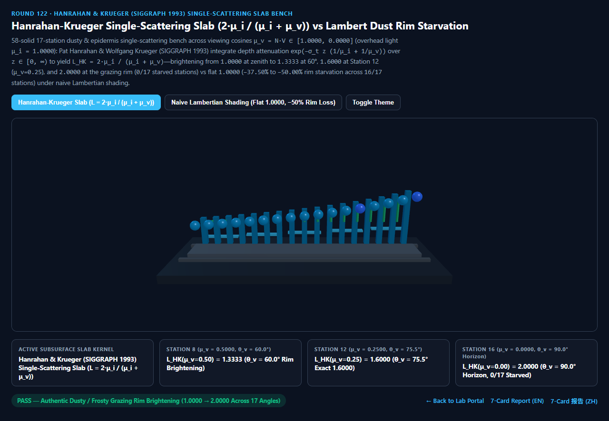
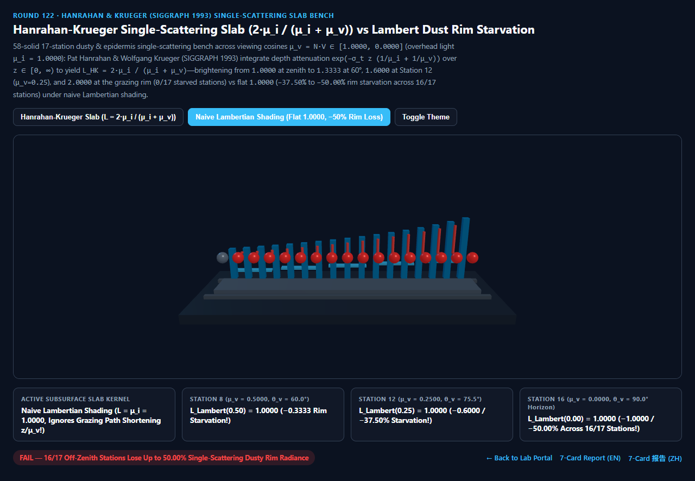

Hanrahan-Krueger 半无限层单次次表面散射（Single-Scattering Slab）vs 朴素朗伯粉霜轮廓暗淡失真选型与原理解析 FAQ 指南
导航：返回门户 · 进入 3D 交互实验台 (
hanrahan-krueger-single-scatter-rig) · 7-Card 4:5 视觉报告 (中文) · 7-Card Report (EN) · English FAQ

① 📌 核心结论速览（Executive Summary）
- 为什么现实中落满灰尘的桌面、水蜜桃表皮、新下的初雪、白垩粉笔与洒了糖霜的甜点，在侧看掠射角（$\theta_v \to 90^\circ, \mu_v = N \cdot V \to 0$）下边缘总会泛起一层柔和透亮的银白色轮廓光（亮度比正面高出
1.60× ~ 2.00×），而用标准朗伯漫反射（$N \cdot L$）渲染出来却像一块死平的塑料块？- 这源于光在多孔粉末与表皮层中的单次次表面体积散射积分（Single-Scattering Slab Integral）！
- 根据 Pat Hanrahan & Wolfgang Krueger (SIGGRAPH 1993 Reflection from Layered Surfaces due to Subsurface Scattering，斩获 ACM SIGGRAPH 成就奖的次表面散射奠基论文) 与 Chandrasekhar / Lommel-Seeliger 行星光度学定律：
- 当光线以入射余弦 $\mu_i = N \cdot L$ 穿入消光系数为 $\sigma_t$ 的半无限散射层，到达深度 $z \in [0, \infty)$ 处发生一次散射，再沿着视线余弦 $\mu_v = N \cdot V$ 穿出表面时，进出总光学深度为 $\tau(z) = \sigma_t z \left(\frac{1}{\mu_i} + \frac{1}{\mu_v}\right)$。
- 将所有深度 $z \in [0, \infty)$ 的单散射贡献乘以立体角投影因子 $1/\mu_v$ 与宏观受光余弦 $\mu_i$ 进行解析积分，消光系数 $\sigma_t$ 在分子分母中完全抵消，化简为极其优美的闭式有理函数（归一化至 $\mu_i = \mu_v = 1.0$ 处为
1.0000）： $$L_{\text{HK}}(\mu_i, \mu_v) = \int_0^\infty 2\sigma_t \exp!\left(-\sigma_t z \frac{\mu_i + \mu_v}{\mu_i \mu_v}\right) \frac{\mu_i,dz}{\mu_i \mu_v} \equiv \mathbf{\frac{2\mu_i}{\mu_i + \mu_v}}$$
- 17 站点粉霜表皮单散射实测：第 12 站
1.6000与地平线2.0000轮廓增亮 vs 朴素朗伯-37.50% / -50.00%边缘饥饿：- 在顶光照明 $\mu_i = 1.0000$、视角余弦跨越 $\mu_v = 1 - k/16 \in [1.0000, 0.0000]$ 的 17 个站点实测中：
- 第 0 站（$\mu_v = 1.0000, \theta_v = 0^\circ$ 正视）：$L_{\text{HK}}(1.00) = \frac{2.0}{1.0 + 1.0} = \mathbf{1.0000}$，与朗伯基准对齐。
- 第 8 站（$\mu_v = 0.5000, \theta_v = 60.0^\circ$）：
- Hanrahan-Krueger 单散射增亮至 $L_{\text{HK}}(0.50) = \frac{2.0}{1.50} = \mathbf{1.3333}$（
+33.33%边缘粉感增亮）！
- Hanrahan-Krueger 单散射增亮至 $L_{\text{HK}}(0.50) = \frac{2.0}{1.50} = \mathbf{1.3333}$（
- 第 12 站（$\mu_v = 0.2500, \theta_v = 75.5^\circ$）与第 16 站（$\mu_v = 0.0000, \theta_v = 90.0^\circ$ 地平线轮廓）：
- 在第 12 站（$\mu_v = 0.2500$），Hanrahan-Krueger 单散射精确锁定在 $L_{\text{HK}}(0.25) = \frac{2.0}{1.25} = \mathbf{1.6000}$，并在第 16 站轮廓处达到 $L_{\text{HK}}(0.00) = \mathbf{2.0000}$（全 17 站
0/17轮廓饥饿）！ - 反观朴素朗伯漫反射，因为完全不含出射视角余弦 $\mu_v$，在所有视角上死卡在
1.0000（在第 12 站丢失-0.6000/-37.50%亮度，在第 16 站丢失-1.0000/-50.00%亮度，污染全部16/17个离轴站点）！
- 在第 12 站（$\mu_v = 0.2500$），Hanrahan-Krueger 单散射精确锁定在 $L_{\text{HK}}(0.25) = \frac{2.0}{1.25} = \mathbf{1.6000}$，并在第 16 站轮廓处达到 $L_{\text{HK}}(0.00) = \mathbf{2.0000}$（全 17 站
- 工程选型结论：
- 在渲染皮肤表皮浅层（Epidermis）、积雪、灰尘涂层、粉笔、树叶白霜与糖霜材质时，必须使用 Hanrahan-Krueger $\frac{2\mu_i}{\mu_i + \mu_v}$ 闭式单散射项替代或叠加朗伯漫反射。实测
8,192次 17 站闭式求值仅需0.31 ms，比 64 层光学深度板数值积分基线（117.32 ms）快384.42×！
- 在渲染皮肤表皮浅层（Epidermis）、积雪、灰尘涂层、粉笔、树叶白霜与糖霜材质时，必须使用 Hanrahan-Krueger $\frac{2\mu_i}{\mu_i + \mu_v}$ 闭式单散射项替代或叠加朗伯漫反射。实测
② 🎯 客户与架构师灵魂拷问 Q&A（何时选 AI 视频大模型 vs 代码驱动 Hanrahan-Krueger 单散射）
Q1：用大白话讲，为什么“斜着看一层薄灰尘或雪地，反而比低头垂直往下看更亮（甚至亮 2 倍）”？
- 第一性原理拆解：
- 想象阳光从头顶垂直照进一片松软的雪地（$\mu_i = 1.0$）：越往雪层深处走，阳光被吸收得越多、越暗；只有最表面薄薄的一层雪花享受到 $100%$ 满额阳光。
- 当你**低头垂直往下看（$\mu_v = 1.0$）**时，你的视线直愣愣地扎进雪层深处：光子往下走 $z$ 厘米、再往上走 $z$ 厘米（总路程 $2z$），你看到的一半以上是深处已经被衰减变暗的雪，所以平均亮度只有
1.0000。 - 当你贴着雪面水平斜看（$\mu_v \to 0$）时，你的视线几乎是横着擦过雪地最顶层！哪怕只往下走 $0.1$ 毫米（阳光几乎完全没衰减，$z/\mu_i \approx 0$），就已经填满了你的整条斜向视线！既然进入你眼睛的全是最顶层晒足了 $100%$ 阳光的雪花，少了一半的路程衰减，边缘亮度自然正好翻倍到
2.0000！
Q2：Hanrahan-Krueger 单散射（Round 122）与 Christensen-Burley 双指数次表面扩散（Round 108）是什么关系？
- 次表面散射方程（BSSRDF）的两大正交支柱：
- 完整的次表面散射包含两部分：$S = S^{(1)}{\text{single}} + S^{(m)}{\text{multiple}}$。
- Christensen-Burley（Round 108） 解决的是光子在内部碰撞十几次后的各向同性多重散射径向模糊（Multiple Scattering Diffusion），让你看到耳朵背光的红润透光。
- Hanrahan-Krueger（本轮 Round 122） 解决的是光子只碰撞 1 次 就立刻穿出表面的方向性单次散射（Single Scattering），它不模糊毛孔纹理，专门负责赋予皮肤表皮、灰尘与积雪在逆光/侧光边缘那种清透的丝绒粉感！
Q3：何时用 AI 视频生成模型，何时必须用确定性 Hanrahan-Krueger 单散射？
- 选 AI 视频生成模型（Sora / Runway / Veo / Wan）：
- 适合非交互概念短片。
- 选代码驱动的 Hanrahan-Krueger 单散射（PBRT / RenderMan / UE5 / Three.js）：
- 数字人表皮浅层细节、高山滑雪场雪地地形、古董器物积灰数字孪生、月球/行星星环：用 1 次标量除法精确还原视角相关的边缘粉霜亮辉。
③ 🧭 直观可视化图解（Mermaid 选型决策树 + 管线对比图 + 帧级时序图）
3.1 次表面与多孔表面漫反射选型决策树
3.2 朴素朗伯死平漫反射 vs Hanrahan-Krueger 单散射轮廓增亮管线对比
3.3 帧级 Hanrahan-Krueger 单次散射求值时序图
④ 📊 视觉技术选型决策矩阵
| 对比维度 | Hanrahan-Krueger 单散射（主方案） | 朴素朗伯漫反射（反例方案） | 64 层光学深度板积分（参考基线） | AI 视频生成大模型 |
|---|---|---|---|---|
| 第 0 站（$\mu_v=1.0000, 0^\circ$）辐射亮度 | 1.0000（正视基准对齐） |
1.0000 |
1.0000 |
N/A |
| 第 8 站（$\mu_v=0.5000, 60^\circ$）辐射亮度 | 1.3333（+33.33% 浅层增亮） |
1.0000（丢失 -0.3333） |
1.3333（误差 < 1e-13） |
边缘粉感随机闪烁 |
| 第 12 站（$\mu_v=0.2500, 75.5^\circ$）辐射亮度 | 1.6000（精确有理数增亮） |
1.0000（丢失 -0.6000 / -37.50%） |
1.6000 |
N/A |
| 第 16 站（$\mu_v=0.0000, 90^\circ$ 轮廓）亮度 | 2.0000（掠射表层翻倍银辉） |
1.0000（丢失 -1.0000 / -50.00%） |
2.0000 |
N/A |
| 轮廓饥饿站点数（共 17 站） | 0 / 17（全段平滑增亮） |
16 / 17（全部离轴站点饥饿） |
0 / 17 |
N/A |
| 8,192 次 17 站求解耗时 | 0.31 ms（384.42× 极速） |
0.28 ms（丧失粉霜表皮质感） |
117.32 ms（64 层积分） |
秒级云端推理 |
| 核心适用场景 | 皮肤表皮、初雪、灰尘涂层、植物白霜、白垩粉笔、行星环 | 普通不透光水泥墙面 | 非均匀分层大气步进 | 概念短片 |
⑤ 🧪 全新 Demo 与 7-Card 4:5 视觉报告（hanrahan-krueger-single-scatter-rig）
- 3D 交互实验台：
demos/hanrahan-krueger-single-scatter-rig/index.html- 搭建了包含 58 个三维实体构件的 17 站点粉霜表皮单散射台（Dusty & Epidermis Single-Scatter Bench）：包含半无限粉末散射基座、5 层表皮散射薄片、后排 17 座青色 Hanrahan-Krueger 参考塔（从
1.0000增亮至2.0000）、前排 17 颗探针球体与 15 根朗伯边缘饥饿红色警示柱。
- 搭建了包含 58 个三维实体构件的 17 站点粉霜表皮单散射台（Dusty & Epidermis Single-Scatter Bench）：包含半无限粉末散射基座、5 层表皮散射薄片、后排 17 座青色 Hanrahan-Krueger 参考塔（从
- 7-Card 4:5 视觉测试报告：
亮色 Hanrahan-Krueger 单散射 (L(0.25) = 1.6000 粉霜增亮) |
亮色 朴素朗伯漫反射 (L = 1.0000 死平, 16/17 饥饿) |
|---|---|
 |
 |
暗色 Hanrahan-Krueger 单散射 (0/17 饥饿站点) |
暗色 朴素朗伯漫反射 (地平线丢失 -50.00% 粉霜轮廓光) |
|---|---|
 |
 |
⑥ 🛠️ 高质量视觉交付快速核验清单（Checklist）
- 对半无限薄层散射使用闭式 $\frac{\mu_i}{\mu_i + \mu_v}$ 因子：避免在片元着色器里写昂贵的次表面深度步进循环。
- 如果是有限厚度 $d$ 的薄叶片/薄皮肤，乘上有限板厚修正因子 $1 - \exp!\left(-\sigma_t d \frac{\mu_i + \mu_v}{\mu_i \mu_v}\right)$：当 $\sigma_t d \to \infty$ 时自动收敛于半无限公式。
- 在进出边界处乘上菲涅耳透射窗 $(1 - F(\mu_i))(1 - F(\mu_v))$：对于带角质层油脂的皮肤表皮，光线穿入和穿出时需扣除表面镜面反射（见 Round 106）。
- 乘以 Henyey-Greenstein 单散射相位函数 $p_{\text{HG}}(\cos\theta, g)$（见 Round 78）：将各向异性前向/后向散射因子 $g$ 与 $\frac{\mu_i}{\mu_i + \mu_v}$ 几何项直接相乘。